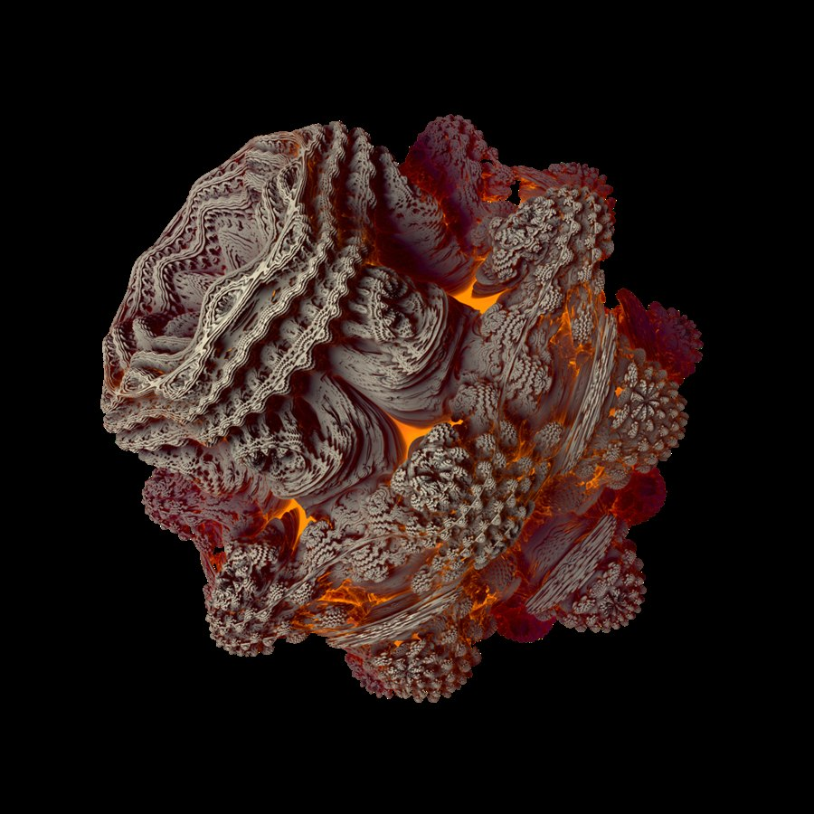
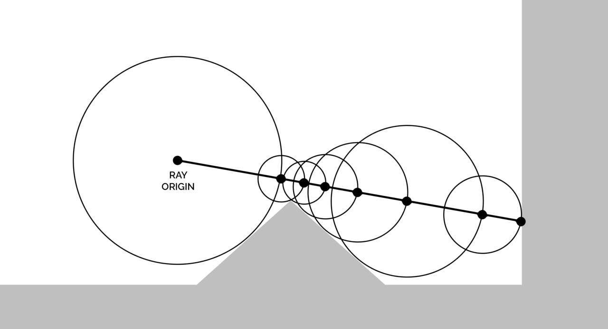
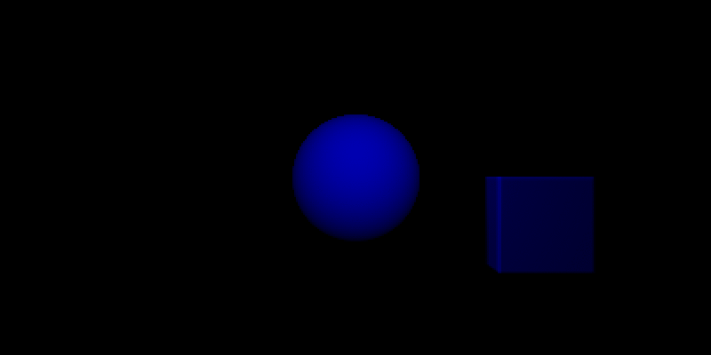
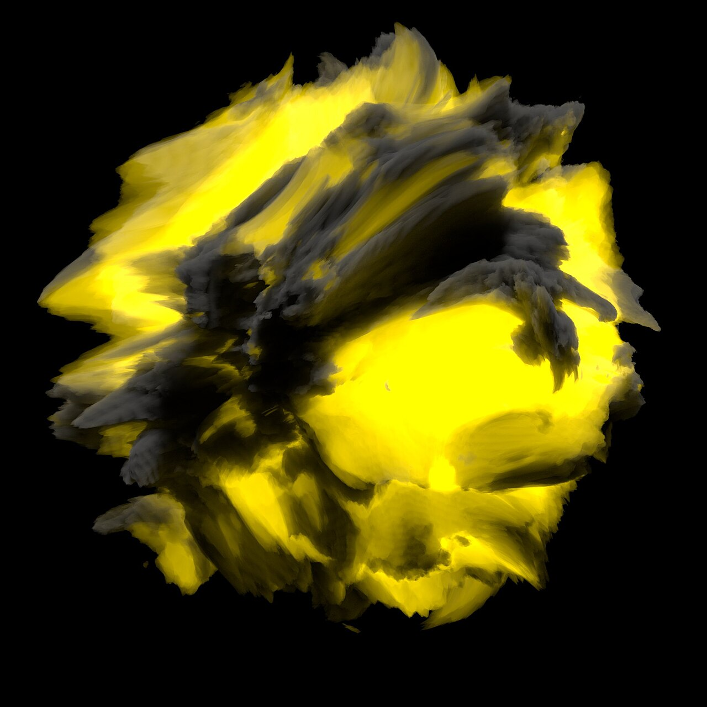
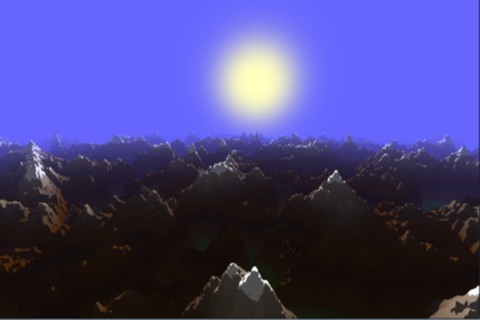

Shader-RayMarch
光线步进（Ray Marching）是我在 Shader 里最喜欢的玩法：不用模型、不用贴图，几行距离函数就能在现场“长”出一个世界。
这篇把自己这些年踩过的点整理一遍：从为什么要“走”而不是“算”，到距离场的性质、软阴影/AO、体积云、分形，再到 URP 里怎么把它塞进管线。

上面这个曼德球（Mandelbulb）没有网格、没有顶点，整张图是一个像素一个像素步进出来的。
先分清三件事
| 方式 | 怎么得到像素 | 擅长 | 不擅长 |
|---|---|---|---|
| 光栅化 | 把三角形投影到屏幕，填像素 | 快、有硬件支持、适合海量网格 | 透明、体积、精确反射/折射 |
| 光线追踪 | 射线与图元求交，解方程 | 精确、物理正确 | 求交函数要解析可解 |
| 光线步进 | 射线按“距离场”一步步往前挪，撞到就停 | 体积、分形、变形表面、程序化场景 | 每像素成本高，没有专用硬件 |
关键差别在于：前两者都要“算出交点在哪”，而光线步进只要求你能回答一个问题——从这个点出发，到最近表面还有多远。
一旦这个问题有答案，任何形状都能渲染。分形没有解析解、云没有边界、地形只有高度图，这些用光栅化或求交都很别扭，但步进完全不受影响。
从求交到步进
传统的 ray tracing 对每个图元解一次方程，比如球就是解一个二次方程，解出来就是交点。这要求形状可解，且求交代码要逐个图元手写。
光线步进换了个思路：不求解，只前进。

起点是相机，方向是像素对应的射线。每一步都问一次“最近表面有多远”，得到一个距离 d，然后直接前进 d。理由是：以当前点为中心、d 为半径的球里不可能有任何表面，这段路是绝对安全的，可以放心跳过。
这个方法叫球体追踪（Sphere Tracing），John C. Hart 在 1996 年提出。它的效率完全取决于距离函数的质量：距离估得准，几大步就能到；估得保守，就得慢慢挪。
1 | |
map(p) 就是场景的完整描述——几何、材质、甚至动画，全在里面。这也是为什么步进的场景写起来像在“编程”而不是“建模”。
距离场：SDF
SDF（Signed Distance Field）是一个标量函数：点在表面外为正，表面内为负，绝对值是到最近表面的距离。
1 | |
这几个函数可以随便平移、旋转、缩放拼出绝大多数硬表面物体，而且不需要任何资源，几十字节的代码就是一个模型。
SDF 最重要的一条性质是 Lipschitz 连续：
1 | |
翻译过来就是“距离函数变化得不会比空间距离更快”，所以用 sdf(p) 当步长永远跨不过表面，这是球体追踪成立的前提。
但反过来，如果距离函数不精确（比如被噪声位移、非均匀缩放、或者分形的距离估计），这个上界就破了，直接等长前进会穿模。工程上的做法有两条：
- 步长乘一个安全系数，常见
0.8 ~ 0.9； - 用梯度归一化：
d = sdf(p) / length(grad(sdf(p)))，把过估的量拉回等比距离，代价是每步多算几次map。
组合：并、交、差、平滑
有了距离，布尔运算就是几个 min/max：
1 | |
平滑并集（smooth union）是步进的独门绝技——光栅化里两个网格要融合得靠建模软件烘焙，步进里改一个参数就行：
1 | |
k 越大，过渡越“黏”，可以做出融化的金属、水滴粘连、黏土质感。

注意平滑运算的结果不再是精确距离（过渡区域会被低估），所以这时候必须配合前面说的安全系数，否则接缝处会穿。
步进循环的三个参数
看似简单的循环，实际调参全在这三个地方：
1 | |
eps（命中阈值）：太小 → 表面永远“差一点”，步数烧光；太大 → 表面浮起、边缘出现台阶和空心。经验值是0.0005 ~ 0.002，并且最好和t挂钩，远处放宽。maxSteps：直接决定最坏情况耗时。桌面128~256，移动端多半只能给48~64，超出就靠提前退出和包围盒裁剪。tmax（最远距离）：必须给，否则一条射向空处的光线会把循环跑满。
还有一个隐蔽的坑：擦边射线。射线几乎平行于表面掠过去时，每步 d 都很小，步数会在局部暴涨。这类像素占比不高，但会让最坏耗时翻倍，所以移动端常配合“半分辨率 + 上采样”来控制。
法线：有限差分
步进只给出“撞到哪”，法线得自己求。最常用的是四点采样（四面体技巧），比六点省一半：
1 | |
采样间距要和场景尺度匹配：固定 0.001 在公里级地形上会抖，在毫米级物体上又太粗。可用 eps * t 动态缩放。
软阴影与 AO
步进的另一个好处是：阴影不需要 shadow map，直接从表面上朝光源再步进一次。
1 | |
h / t 的几何含义是“这条光线在遮挡物边缘上张开的角”，取整条路径上的最小值，就是半影的浓淡。这个技巧叫 soft shadow by SDF，比 PCF 便宜得多，而且没有分辨率问题。
环境光遮蔽（AO）同理，沿法线方向采样几次距离，越近的遮挡贡献越大：
1 | |
转折处变暗、缝隙变脏，这些“GI 的廉价近似”让步进场景不至于塑料感。
体积：从表面到积分
前面都是“撞到表面为止”。如果把 map 理解成密度场，步进就变成沿射线做积分——云、雾、烟、光柱都归这一类。

思路是：定步长前进，每一步累加光照贡献，同时按 Beer-Lambert 定律衰减透射率：
1 | |
几个实践点：
- 步长决定质量：定步长会出现层状条纹（banding），常见的解法是每像素随机偏移起点，再靠 TAA 或蓝噪声在时间上抹平。
- 相函数（Henyey-Greenstein 或最简单的
pow(saturate(dot(rd, L)), 8)）决定云是“薄纱”还是“边缘发亮”。前向散射强的云，逆光时会有一圈亮边。 - 需要光源可见性：湿云要好看，每步还得朝太阳再步进几次算阴影（也就是所谓的 light march），这是云渲染里最贵的一块，通常用低分辨率 shadow map 或半分辨率 pass 顶替。
- 和场景混合：体积在前、硬表面在后时，用场景深度裁剪
tmax；硬表面在前就先画完再叠体积。
分形：距离估计的进阶
分形是步进的主场，因为它没有“表面”这种东西——只有一个迭代规则。以 Mandelbulb 为例，距离估计（Distance Estimator）长这样：
1 | |
这类距离估计不是精确距离，只是下界，所以步长要乘 0.5 ~ 0.9；迭代次数越多结构越细，但也越容易在细节处步进失效，出现“融化”的噪点。
同样的套路还能做无限重复（domain repetition）、扭曲、Mandelbox、KIFS——本质都是“把点变换进一个基本空间，用基本 SDF 估计距离”。
地形与高度场
高度图也能步进，而且思路和 SDF 不太一样：没有解析距离，只能“按高度差约束步长”。

1 | |
这里的关键是 minStep：当地面和射线几乎平行时，高度差很小，步长会退化成 0，必须给一个下限，否则循环原地打转。地形步进的成本通常比 SDF 高，因为每步都要采样高度图（采样带宽比算术贵）。
在 URP 里怎么跑
步进在引擎里一般是全屏 Pass：拿相机的逆视图投影矩阵，为每个像素重建射线，然后算，最后和场景深度混合。
1 | |
1 | |
几个落地经验：
- UV 翻转：
Blit在不同平台上 UV 的 Y 方向会反，GL.GetGPUProjectionMatrix的renderIntoTexture参数要和实际一致，否则整屏上下颠倒或左右镜像。 - 和深度混合：读
_CameraDepthTexture还原场景深度，作为tmax，这样步进结果才能正确被墙体遮挡；只做“叠加式”的雾/体积可以不做深度测试，但云这种要。 - 分辨率：整屏全分辨率跑 128 步基本只能跑在桌面上。移动端常规做法是半分辨率 + 双边上采样 + 抖动。
- 不用改管线也行：Built-in 里
OnRenderImage挂 Blit 就能跑，URP 里没有这个钩子，必须走 Renderer Feature；如果只是想在场景里放“一个步进的物体”，也可以用Graphics.DrawProcedural或一张透明面片写深度。
常见坑与优化
- 表面黑点/漏光：
eps小于步长导致的“穿过去”，加速系数反而会更糟；先检查是不是距离函数不精确。 - 远处锯齿和闪烁：步进天然没有抗锯齿，靠 TAA、
dither抖动初相位、或超采样。静态图可以用累积帧。 - 边缘发灰（光晕）：
eps和背景混合造成的，命中后可用smoothstep做一点透明度，或者接受一点点软边。 - 性能墙：最贵的三件事——每步的
map调用次数、软阴影/体积的嵌套循环、过高分辨率。优先级排序通常是：降分辨率 > 砍阴影步数 > 简化 map > 降主步数。 - 精度：
half在长距离步进上会明显劣化（表面抖动、命中失败），距离累计用float。 - 最大步数不能省：GPU 上层叠循环里的动态退出依赖编译器展开，
maxSteps必须是常量，否则在部分驱动上会退化成极慢的动态循环。
参考
- Inigo Quilez：Ray Marching and Signed Distance Functions
- Inigo Quilez：Distance functions 合集
- Inigo Quilez：Soft shadows
- Inigo Quilez：Ambient occlusion
- Wikipedia：Ray marching
- Wikipedia：Mandelbulb
图片来源
- 曼德球渲染图：Falco Badermann，CC0，Mandelbulb fractal.png
- 球体追踪示意图：Teadrinker，CC BY-SA 4.0，Visualization of SDF ray marching algorithm.png
- 平滑并集动画：Streepje8，CC BY-SA 4.0，Raymarching blend 800x400.gif
- 实时步进地形：Heyx3，CC BY-SA 4.0，Real-time Raymarched Terrain.png
- 体积云：Thomas M Bishop，CC BY-SA 4.0，Volumetric Cloud.jpg